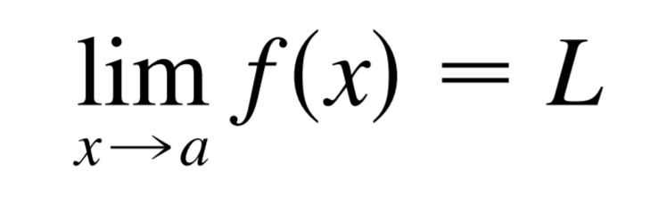
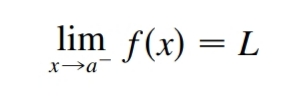
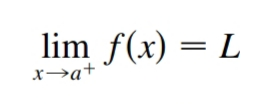
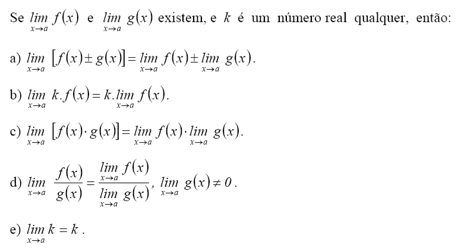
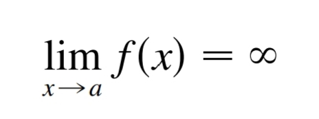
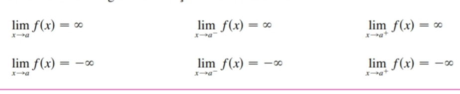
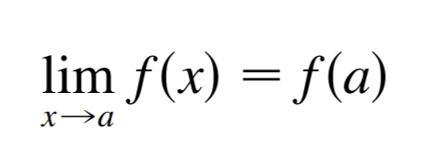

Limites
Definição de limites
Suponha que seja definido quando está próximo ao número a. (Isso significa que f é definido em algum intervalo aberto que contenha a, exceto possivelmente no próprio a.) Então escrevemos:
e dizemos “o limite de , quando x tende a a, é igual a L” se pudermos tornar os valores de arbitrariamente próximos de L (tão próximos de L quanto quisermos), tornando x suficientemente próximo de a (por ambos os lados de a), mas não igual a a.
De forma intuitiva
A grosso modo, pode-se entender que quando f(x) tende a L é quando x tende a "a". Ou seja, o limite será o estudo do que acontece no eixo y quando x estiver muito próximo de "a", mas não é igual ao número.
Limites Laterais
Escrevemos
 E dizemos que o limite à esquerda de f (x) quando x tende a a [ou o limite d ef (x) quando x tende a a pela esquerda] é igual a L se pudermos tornar os valores de arbitrariamente próximos de L, para x suficientemente próximo de a e x menor que a.
Propriedades do limite
Limites no infinito
Seja f uma função definida em ambos os lados de a, exceto possivelmente no próprio a. Então:
significa que podemos fazer os valores de ficarem arbitrariamente grandes (tão grandes quanto quisermos) tornando x suficientemente próximo de a, mas não igual a "a".
Assintonas verticais
A reta é chamada assíntota vertical da curva se pelo menos uma das seguintes condições estiver satisfeita:
Propriedade da Substituição direta
Se f for uma função polinomial ou racional e a estiver no domínio de f, então
